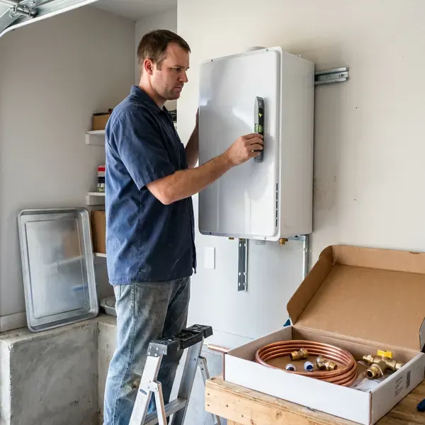

Electric Tankless Water Heater Installation in Pasco, WA
Our Pasco, WA plumbers install whole-home and point-of-use electric tankless heaters sized to your water conditions.
- Upfront Pricing
- Expert, Certified Plumbers
- Prompt, Efficient Installation
- Expert Plumbers

Ready for Instant Hot Water in Pasco, WA?
Call (425) 491-3131 to schedule a sizing visit and panel review.
Expert Electric Tankless Water Heater Installation in Pasco, WA
When you choose FHN Plumbing for your electric tankless water heater installation in Pasco, you're investing in efficiency and comfort. We handle everything from assessing your home's electrical capacity to selecting the right unit for your needs, ensuring a smooth transition to endless hot water.
Our expertise includes:
- Ensuring all local plumbing and electrical codes are met.
- Panel capacity review and coordination for dedicated circuits
- Expert sizing and placement of tankless units.

Additional Plumbing Installation Services in Pasco, WA
We install water heaters, pumps, lines, and fixtures across Pasco, WA with precision workmanship that meets every local code.


Customers
Why Choose FHN Plumbing for Electric Tankless Water Heater Installation in Pasco, WA?
Choosing FHN Plumbing for your electric tankless water heater installation means partnering with experienced local plumbers. We understand the particular demands of Washington homes and water conditions.
- Energy Savings, Heat water only when you need it, cutting down on wasted energy and utility bills.
- Endless Hot Water, Never run out of hot water again, even with multiple showers or appliances running simultaneously.
- Space Savings, Wall-mounted units free up garage and closet space.
Citywide Coverage
We install electric tankless water heaters in homes, condos and guest suites throughout Pasco. Wall-mounted units fit well in garages, closets and utility rooms.
Experienced Team
The FHN Plumbing team consists of well trained and licensed plumbers who are experts in electric tankless water heater systems. They understand the details of electrical wiring, water pressure and installation requirements, ensuring a safe and efficient setup for your Pasco home.
Safety-First Approach
Safety and code compliance are paramount for every electric tankless water heater installation we undertake. Our plumbers carefully follow all local Pasco and Washington plumbing and electrical codes, including sizing circuits and proper grounding. We make sure your new system operates safely and effectively.
Trusted Certified Pasco Plumbing Services Professionals
At FHN Plumbing, we take pride in providing certified plumbing services throughout Pasco, WA. Backed by recognized industry credentials, our experienced plumbers combine technical skill with genuine customer care. Whether it is repair, installation, or maintenance, we follow strict safety and quality standards to deliver lasting results you can trust.
Call Us Now PHCC Plumbing Contractor Recognition
PHCC Plumbing Contractor Recognition Better Business Bureau (BBB) Accreditation
Better Business Bureau (BBB) Accreditation Angi Certified Pro
Angi Certified Pro ISO 9001 Quality Management Certification
ISO 9001 Quality Management CertificationEnergy-Smart Electric Tankless Water Heater Installation in Pasco, WA
Residential Electric Tankless Heater Installation in Pasco
For homeowners in Pasco, we provide custom electric tankless water heater installation services. We assess your household's hot water demand, existing electrical capacity and main water line size to recommend the perfect unit. Our team handles everything from permit acquisition to final testing, making for a hassle-free upgrade to endless hot water. Washington has two very different climates, with long, wet and mild seasons in the west and hot, dry summers and cold winters in the east.

Navien Electric Tankless Water Heater Installation in Pasco, WA
FHN Plumbing is experienced with installing leading brands like Navien, known for their high-efficiency tankless water heaters. Navien units offer modern features and reliable performance, providing consistent hot water with precise temperature control. We make sure your Navien unit is installed according to manufacturer specifications and local Pasco, WA codes for proper function and warranty validity.
Upgrading from Tank to Tankless Electric in Pasco
Many Pasco homeowners are making the switch from traditional tank-style water heaters to electric tankless models. This upgrade often involves modifications to your electrical panel to handle the higher amperage draw of tankless units, as well as rerouting water lines. Our plumbers manage these complexities, making for a smooth transition and getting the most from the benefits of your new system.
Whole-Home Electric Tankless Systems in Pasco, WA
For complete hot water coverage throughout your Pasco, WA home, a whole-home electric tankless system is an excellent choice. We size the unit appropriately based on your fixture count and simultaneous hot water usage, ensuring consistent temperatures at every tap. This typically involves a single, larger unit or a series of smaller point-of-use heaters for the best performance.
Rheem Electric Tankless Water Heater Installation in Pasco
Rheem is a trusted name in water heating, offering a range of high-performance electric tankless models. FHN Plumbing is proficient in installing various Rheem units, known for their durability and efficiency. We make sure your Rheem unit is perfectly sized and correctly wired to provide optimal hot water delivery. Our team handles everything from securing the unit to the wall to making sure all electrical and water lines are properly connected and leak-free.
Electric Tankless Replacement and Upgrades in Pasco
Older electric tankless units may struggle to keep up or show frequent error codes. We replace aging units with newer, more efficient models. Upgrades may include higher kilowatt ratings or better flow control. We check wiring and plumbing connections during replacement. A new unit can restore reliable performance.
Electric Tankless for Guest Suites and Additions in Pasco, WA
Guest houses, guest suites and home additions often sit far from the main water heater. Running long hot water lines wastes water and energy. An electric tankless unit installed near the fixtures provides quick hot water. We size the unit for the space and its fixtures. This is an efficient solution for detached living spaces.

Whole-Home Electric Tankless Installation in Pasco
Whole-home electric tankless units can supply multiple fixtures at once when properly sized. Models like the Stiebel Eltron Tempra and Rheem RTEX often require multiple dedicated 240 volt circuits. We size the unit based on your peak flow and temperature rise. Washington has two very different climates, with long, wet and mild seasons in the west and hot, dry summers and cold winters in the east. We install isolation valves for easy descaling.
Electric Tankless Water Heater Installation Near Me in Pasco, WA
If you're searching for 'electric tankless water heater installation near me' in Pasco, WA, look no further than FHN Plumbing. Our local plumbers are familiar with the area's water conditions and building standards, delivering a tailored and effective installation. We're dedicated to providing prompt and reliable service to our community.
When you need an electric tankless water heater installed, you want a reputable local company. FHN Plumbing is dedicated to serving our Pasco neighbors with top-quality workmanship and friendly customer service, ensuring your hot water needs are met efficiently.
FHN Plumbing at a Glance
- Licensed and insured plumbers serving Pasco, WA
- 24/7 emergency service with same-day scheduling
- Upfront, flat-rate pricing before work begins
- 4.9-star rated by 382+ Washington customers
Pasco Map
Pasco Information
- Population
- 80,038
- Area codes
- 509/208/541
- Service area
- Pasco and communities within 40 miles
- Nearby
- Kennewick, Richland, Yakima, Wenatchee
Electric tankless water heater installation is a practical choice for Pasco, WA homes, offering energy efficiency and continuous hot water. Washington has two very different climates, with long, wet and mild seasons in the west and hot, dry summers and cold winters in the east.
Expert Services
Trust our professionals for reliable FHN Plumbing solutions in Pasco, WA.
Our Specialized Plumbing Services in Pasco, WA
At FHN Plumbing, we provide a complete range of plumbing services across Pasco, WA. From leak detection to full system installations, our team ensures fast, precise, and affordable service for both residential and commercial properties. Explore our core services below:


How Our Electric Tankless Water Heater Installation Process Works in Pasco, WA
Our electric tankless water heater installation process in Pasco, WA is designed to be simple and efficient, ensuring your new system up and running with little disruption.
Request a Quote
Call (425) 491-3131 or fill out our online form to schedule an initial consultation. We'll discuss your hot water needs and assess your home's electrical and plumbing systems.
On-Site Assessment
Our experienced technician will visit your Pasco home to evaluate your current setup, determine the best location for the new unit and confirm electrical requirements. This step is crucial for proper sizing.
Professional Installation
We carefully install your new electric tankless water heater, making all necessary electrical connections and water line adjustments and ensuring proper flow and pressure. We test the unit carefully.
Frequently Asked Questions About Electric Tankless Water Heater Installation in Pasco
Point-of-use units usually cost $500 to $1,500 installed. Whole-home electric tankless installations often cost $1,500 to $4,500, and panel upgrades can add $2,000 to $4,000.
Yes, in most cases a permit is required for electric tankless water heater installation in Pasco, WA. This confirms that the installation meets local building and electrical codes, guaranteeing safety and proper function. FHN Plumbing handles all necessary permit applications for you.
Most electric tankless water heaters come with a manufacturer's warranty, typically 5 to 10 years on the heat exchanger and 1 to 3 years on parts. FHN Plumbing also provides a labor warranty on our installation services. We will discuss specific warranty details for your chosen unit during your consultation.
Sizing an electric tankless water heater correctly is crucial and depends on factors like the number of hot water fixtures in your home, your incoming groundwater temperature and your peak hot water demand. Our technicians will perform a careful assessment to recommend the right size for your Pasco household.
FHN Plumbing installs a variety of reputable electric tankless water heater brands, including Rheem, Ecosmart, Stiebel Eltron, Bosch and Noritz. We can help you choose the best brand and model that fits your budget and hot water demands, providing a quality and efficient solution for your home.
Warranties vary by brand, often 5 to 7 years on heating elements and longer on other components. We also stand behind our installation work.
Water hardness varies from place to place. Many rural Washington homes rely on private wells, and some carry iron, manganese or other minerals that call for testing and treatment. Like any water heater, electric tankless units benefit from regular flushing to prevent mineral buildup, especially if your Pasco area has harder water. We can advise on maintenance and offer water softening solutions if needed.
Most electric tankless installations require plumbing and electrical permits. We handle permits and coordinate inspections.
What People Are Saying About Our Plumbing Experts?

James P.
Our commercial plumbing system had a leak under the sink, and FHN Plumbing handled it professionally. The plumbers arrived quickly and restored everything without disruption to our customers.
Commercial Plumbing · Yakima, WA
Emily R.
I called FHN Plumbing for plumbing repair, and the technician was fast, polite, and thorough. They explained the problem clearly and fixed it the same day. I will definitely hire them again. Highly recommended!
Plumbing Repair · Spokane Valley, WA
Laura S.
I scheduled a water heater replacement, and the team made the process smooth and affordable. The new unit works perfectly, and they cleaned up after completing the job.
Water Heater Replacement · Pasco, WA
Patricia H.
We had a slab leak that two other companies could not find. FHN Plumbing located it in under an hour, explained our options, and the price matched the quote to the dollar.
Slab Leak Repair · Spokane, WA
Daniel K.
A pipe burst at 11 pm and they actually answered. The plumber showed up within the hour, shut everything down, and had us back to normal the next morning. Could not ask for more.
Emergency Plumbing · Richland, WASofia M.
Two new toilets installed in one visit, no mess left behind, and the tech even adjusted a faucet he noticed was dripping. Fair pricing and really friendly.
Toilet Installation · Spokane, WA